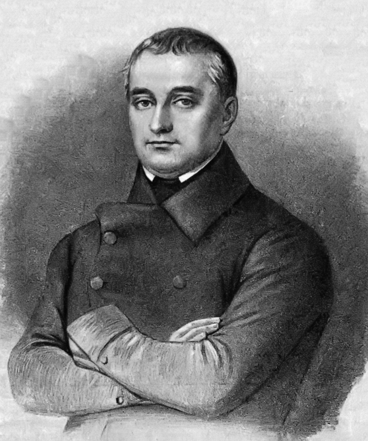
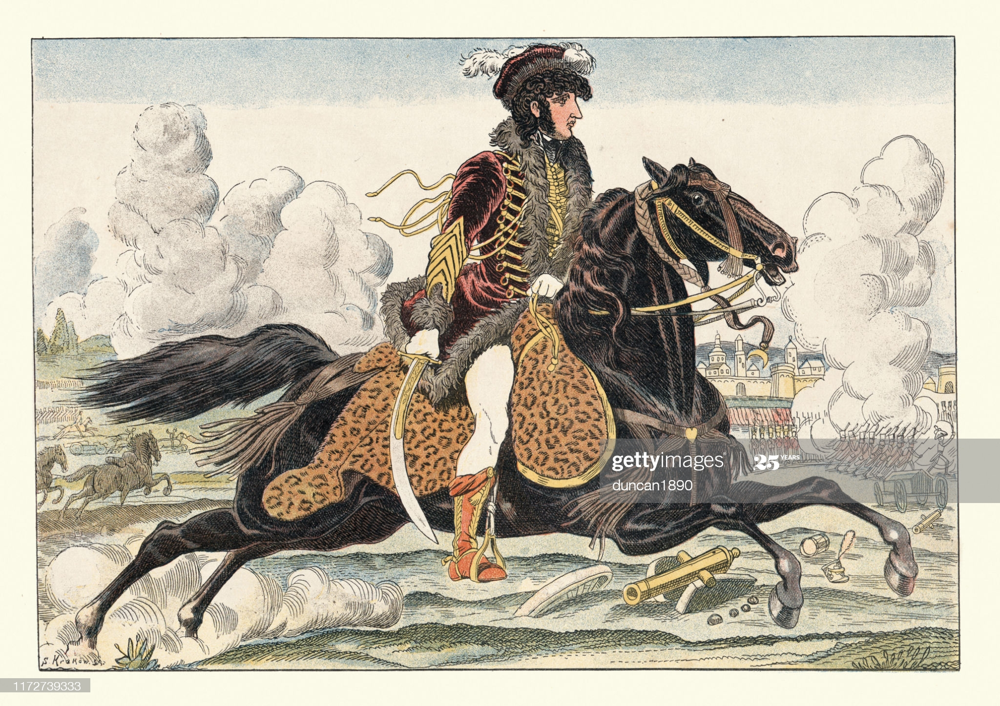
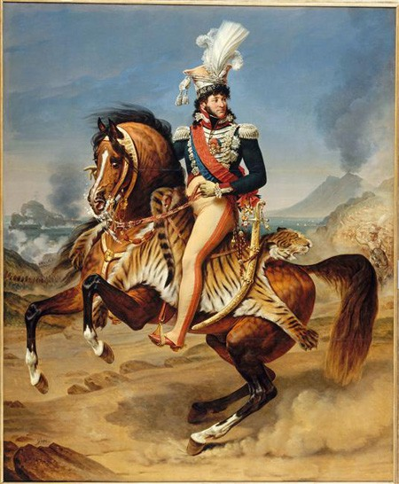

모스크바 최후의 밤 - 1812년 9월 14일 새벽
게시: 2020-11-30T06:30:09+09:00
9월 13일 밤 러시아군의 철수는 쿠투조프의 결정 이후 즉각 이루어졌습니다. 쿠투조프가 회의를 소집했던 것이 저녁 8시였는데, 이미 밤 11시에는 러시아군 포병대가 모스크바 시내 중심가를 통과하고 있었습니다. 부투를린(Dmitry Petrovich Buturlin)이라는 젊은 참모 장교의 기록에 따르면 이 후퇴를 하며 러시아군은 장교들이나 병사들이나 모두 분하고 억울해서 눈물을 흘리며 걸었다고 합니다. 바로 몇시간 전까지만 해도 모스크바 사수를 외치던 군대가 시내를 가로질러 후퇴하는 모습을 보고 시민들도 복장이 터졌습니다. 어떤 시민들은 병사들을 향해 욕설을 퍼붓기도 했습니다. 어두운 밤거리는 혼란의 도가니가 되는 듯 했습니다. 그런데 가만 보면 의외로 러시아군의 후퇴는 꽤 질서가 있었던 것을 알 수 있습니다. 기억들 하시겠습니다만 1809년 바그람 전투에서 신호를 받으면 즉각 브라티슬라바를 떠나 바그람으로 달려오라는 준비 명령을 이미 받았던 요한 대공이, 그 신호를 받고 난 뒤 행군 준비를 시작해 실제로 출발을 시작하는데까지 무려 19시간이 걸렸습니다. 이렇게 군대의 이동은 준비에만 상당한 시간이 걸리는 것입니다. 러시아군은 (적어도 표면적으로는) 그 자리에서 끝장을 보거나 전멸을 하거나 라는 각오로 땅을 파고 있었으므로 더욱 준비하는데 시간이 걸렸을 것입니다. 그런데 8시에 회의를 시작해서 9시쯤 결정이 났는데, 11시에 선두부대가 모스크바 시내를 가로지르고 있다 ? 이건 굉장히 민첩한 부대이거나 미리 다 준비를 해놓았거나 둘 중 하나입니다. 무엇보다, 당시 후퇴하던 러시아군이 가장 소중히 해야 하는 부대는 기병대와 포병대였는데, 가장 무겁고 느린 포병대가 가장 먼저 후퇴했다는 것만 봐도 후퇴의 정석이 제대로 지켜지고 있다는 것을 알 수 있습니다. 게다가 부대 전체가 눈물 바다였다는 기록을 남긴 부투를린의 기록에도 시내를 통과할 때 요소요소의 길목마다 코작 기병들을 거느린 참모 장교들이 배치되어 부대들이 잘못된 길로 빠져 길을 잃지 않도록 안내하고 있었다는 말이 있습니다. 이건 최소한 쿠투조프의 참모 장교들이 굉장한 행정 능력을 갖춘 인재들이었다는 것을 말해줍니다.

(부투를린(Dmitry Petrovich Buturlin)입니다. 그는 당시 22세의 젊은 장교였는데 볼콘스키 대공 (Pyotr Mikhailovich Volkonsky)의 참모로 있었습니다. 나중에 그는 군에서 예편하여 국립 도서관장을 하면서 러시아 문학에 대한 대대적인 검열을 주도하기도 했습니다.) 이렇게 후퇴가 무질서 속에서도 나름 질서가 있었다는 것은 군 부대에만 해당하는 이야기가 아니었습니다. 일부 시민들은 위에서 언급한 것처럼 길거리로 쏟아져 나와 욕설을 퍼부어댔지만, 상당수의 시민들은 그 밤중에 상점과 주택의 문을 열고 온갖 상품과 먹을 것 등을 후퇴하는 병사들의 손에 쥐여주었습니다. 어차피 이제 프랑스군이 입성할 것인데, 적군의 손에 넘겨주느니 아군에게 주겠다는 것이었지요. 13세기 몽골 침략 이후 처음으로 러시아의 수도가 함락되는 미증유의 사태를 겪는 민간인들치고는 이 정도의 혼란은 무척 놀라울 정도의 침착한 반응이었습니다. 이건 모스크바 주지사 로스톱친의 공로였습니다. 그는 지난 몇 주간 최후의 1인까지 싸우자고 온갖 반-나폴레옹 선동을 벌이면서도 모스크바가 함락되는 경우에 대해서도 준비를 해두었고 그에 따라 시민들을 소개시킬 준비도 진행하고 있었던 것입니다. 그날 밤 수만 명의 시민들이 군대와 함께 모스크바를 떠났습니다. 로스톱친은 그 외에도 주요 창고들에 불을 질러 프랑스군에게 식량과 보급품이 넘어가는 일을 막으려 했습니다. 적지 않은 수의 장교들은 모스크바가 집이거나 또는 친지가 있었기 대문에 이런 와중에도 잠깐 집 또는 친지네 집에 들러 다시 시작된 고달픈 후퇴를 위한 생필품을 보충하거나 옷을 갈아입기도 했습니다. 슈카닌(Sukhanin)이라는 대위는 라주모브스키(Razumovsky) 백작이라는 친지의 집을 방문했는데, 백작이 출타 중이었음에도 불구하고 하인들은 주인의 옛 친구를 반갑게 맞이하며 (그 한밤 중에) 와인이 딸린 아침 식사를 내왔을 뿐만 아니라, 식사를 하는 그 잠깐 동안에도 악사들이 모여 우아한 음악을 연주했다고 합니다. 그러나 아무리 준비가 잘 되었다고 해도 후퇴에는 상당한 혼란이 동반될 수 밖에 없었습니다. 일부 거리에서는 흥분한 시민들이 부상병들이 탄 마차를 공격하여 자신들의 짐을 싣기도 했고 곳곳에서 폭력 사태가 벌어지기도 했습니다. 특히 시민들이 후퇴 행렬에 합류하면서 말과 마차, 부대들이 뒤엉켜 교통 체증이 발생하자 상황이 더욱 나빠졌습니다. 행군을 멈추자 병사들이 슬금슬금 주변 상점과 주택으로 들어가 먹을 것과 마실 것 (물론 알코올이 잔뜩 들어간 마실 것)을 찾기 시작했기 때문이었습니다. 이들은 곧 주류 창고에 난입했습니다. 병사들에게 술을 부으면 개가 되는 것은 동서고금을 막론하고 다 똑같았는데, 이 난장판에 범법자들과 부랑자들까지 가세하면서 더욱 난리가 났습니다. 로스톱친이 모스크바 소개령을 내리면서 감옥도 개방했기 때문이었습니다. 이 혼란의 클라이맥스는 로스톱친과 쿠투조프의 예정에 없던 만남이었습니다. 모스크바 함락에 분노한 시민들이 로스톱친을 두들겨 패려고 그의 관저로 몰려오는 것을 간신히 피해 뒷골목으로 도망친 로스톱친이, 역시 시민들의 눈을 피해 뒷골목으로 모스크바 시내를 통과하던 쿠투조프 일행과 딱 마주쳤던 것입니다. 사람들과 마주치기를 원치 않았던 쿠투조프를 그 뒷골목으로 인도했던 것은 모스크바가 고향이었던 그의 참모 골리친(Galitzone)이었는데, 골리친의 기록에 따르면 이 짧은 만남에서 로스톱친이 뭔가 말하려 했으나 쿠투조프가 말을 딱 끊고 황급히 헤어졌다고 합니다. 엎친데 덮친다고 여기에 프랑스군까지 뛰어들었습니다. 후위대를 맡았던 밀로라도비치(Miloradovich)의 부대가 모스크바 시내로 들어와보니 시내는 교통 체증으로 꽉 막혀 있었는데, 그렇게 길이 뚫리길 기다리며 멍하니 서있는 군중 중에는 놀랍게도 뮈라 휘하의 폴란드 경기병들도 섞여 있었습니다. 이미 프랑스군이 모스크바에 입성하고 있었던 것입니다 ! 만약 이때 뮈라가 '모조리 잡아들여라' 라는 명령을 내렸다면 러시아군의 상당수가 꼼짝없이 사로잡혔을 것입니다. 쿠투조프가 밀로라도비치에게 후위대를 맡길 때 밀로라도비치는 자신에게 모든 패전 책임을 떠맡기려고 한다며 불같이 화를 냈습니다만, 결국 쿠투조프는 인물 선정에 꽤 뛰어난 눈을 가진 리더였었나 봅니다. 이렇게 경악할 만한 상황에 직면해서도 밀로라도비치는 침착하게 성 밖의 프랑스군에게 사절을 보내 뮈라를 찾게 했습니다. 뮈라에게 인도된 연락 장교는 밀로라도비치의 메시지를 전했는데, 그건 "몇 시간만 휴전을 하자, 그러면 모스크바를 무혈 점령하도록 해주겠다, 만약 거절한다면 모스크바를 홀라당 태워버리겠다" 라는 것이었습니다. 뮈라는 당연히 이를 승낙했습니다. 우선 나폴레옹이 멀쩡한 상태의 모스크바에 입성하고 싶어 했고, 프랑스군은 모스크바에 쌓여 있을 식량이 무엇보다 소중했으며, 마지막으로 뮈라 뿐만 아니라 모든 프랑스군은 이미 전쟁은 끝났고 자신들은 러시아의 정복자로서 전쟁의 끝을 축하하러 모스크바에 입성한다고 생각했기 때문이었습니다. 이 자리에는 러시아 장교를 호위하기 위해 온 코작 기병들이 함께 있었습니다. 기마 민족 코작들은 유럽 제일의 기병이라는 뮈라의 명성을 전설처럼 들어왔는데, 직접 눈으로 본 그 전설적인 인물의 복장이 너무나 화려하여 이 코작들은 반쯤 얼이 빠진 상태였습니다. 그런데 뮈라가 시간을 확인하느라 품에서 회중 시계를 꺼내들자 이들은 그 시계라는 물건에 더욱 얼이 빠져 침을 질질 흘렸습니다. 이를 본 뮈라는 그 시계 뿐만 아니라 자신의 참모들에게 모두 시계를 꺼내도록 하여 이 코작들에게 선물로 주었다고 합니다. 전쟁이 끝났음을 축하하는 너그러움이었지요.
 
(뮈라의 트레이드 마크는 저 호랑이 가죽 안장 깔개와 화려한 깃털 모자입니다.) 이 임시 휴전은 곧 발효되었습니다. 모스크바 성 밖에서 이미 진을 치고 있던 프랑스 기병 사단은 순순히 길을 풀어주고 러시아 부대가 자신들 한가운데를 통과하도록 해주었고, 일부 부대는 길을 잃은 러시아 용기병들에게 러시아군 주력 부대가 간 방향으로 안내까지 해주었습니다. 프랑스군이나 러시아군이나 모두 이 전쟁이 나폴레옹의 승리로 끝났다는 것을 다들 인정하는 분위기였습니다. 강경파 러시아군 장교들도 이제 짜르가 나폴레옹에게 평화 협상을 구걸힐 수 밖에 없다고 생각했고, 그 중 나폴레옹을 죽어라 혐오하던 극렬파는 아예 스페인으로 건너가 거기서 영국군과 함께 프랑스군에 저항하는 싸움에 가담할 생각을 벌써부터 하고 있었습니다. Source : 1812 Napoleon's Fatal March on Moscow by Adam Zamoyski
en.wikipedia.org/wiki/Dmitry_Buturlin
www.gettyimages.com/illustrations/hussar-cavalry
www.napoleon.org/histoire-des-2-empires/tableaux/portrait-equestre-de-joachim-murat/